0 — 한줄소개
박예진은 이미지 생산자이다. 비정형적이고 자연스러운 것에서 나오는 시각적 쾌감에 관심이 많다.
오성건은 독서를 좋아하지만 글을 읽지는 않는다. 서브컬쳐와 터부시 되는 것들에 관심이 많으며 주로 책으로 펴낸다.
조희원은 매끄럽고 그럴듯한 이미지를 경계한다. 동시에 이미지와 텍스트가 여러 매체를 이동하며 생기는 예상치 못한 변화에 흥미를 느낀다.
책*피자는 피자를 먹으며 탄생한 팀으로, 반항적인 출판에 관심이 많으며 관련된 여러 담론을 공유한다.
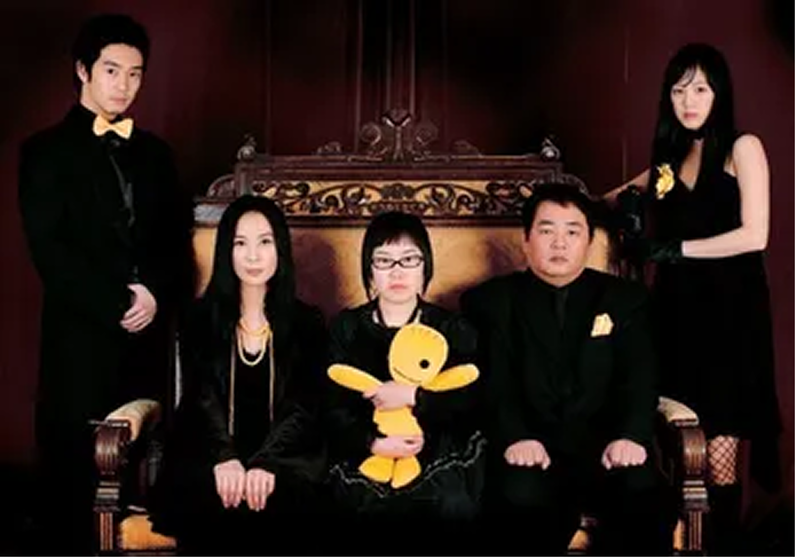
1 — 선택한 책과 그에 따른 키워드
조희원 ‘문예 비창작’
하고싶은 것과 고민
종이 매체에서 화면으로 옮겨졌을 때의 변화
내용을 담는 구조에서 특이점이 있으면 좋겠음
개별 키워드
구조/ 선형성/ 비선형성/ 텍스트와 이미지의 재맥락화 (변이)/ 매체성과 출판 / 출판의 과정 (편집 방식의 변화, 인쇄기의 변화) / 증식, 확장하는 텍스트
(텍스트는 완결되지 않는다) / 균열 / 파열 / 오류 / 정치성 / 해적질 / 훔치기 / 전유-재전유 / 물질과 비물질 / 아날로그와 디지털 / 선언 (메니페스토) / 심미성(미적인 것)과 정치성의 관계 공존 / 탈권위 / 행위 (읽는 행위, 출판의 행위..) / 한 곳에서 다른 곳으로 옮기는 것 (이동)
오성건 ‘책을 만드는 새로운 예술’
하고싶은 것과 고민
한국/아시아의 출판으로 좁히기 (방법으로서의 출판, 엑스포츠 온 페이퍼) 혹은 책사회총서 시리즈를 중심으로 다뤄도 좋을 것 같음
개별 키워드
독립출판 / 해적질과 번역 / 북페어 / 메니페스토 / 임프린트 / “다른 독해를 요구한다.” / 다른 방식으로 보기 / ‘새로운 규칙’ / 재료: 언어 / 아티스트 북(북웍스) / 아날로그와 디지털 / “오래된 예술에서 작가는 텍스트를, 새로운 예술에서 저자는 책을 만든다.” / 책사회총서 / 편집과 재맥락화 / ‘매체에 따른 변화’ 그에 적응하는 방식 / 제약
박예진 ‘No-ISBN’
개별 키워드
선언문 / 정치성 / 출판 / 독립출판 / 인쇄 / 진 문화 / 역사성 / 텍스트가 존재하는 방식 / 책의 물질성 / 공론장으로서 아트북페어 / 저항하기 / 매체의 변화 / 퍼블리싱
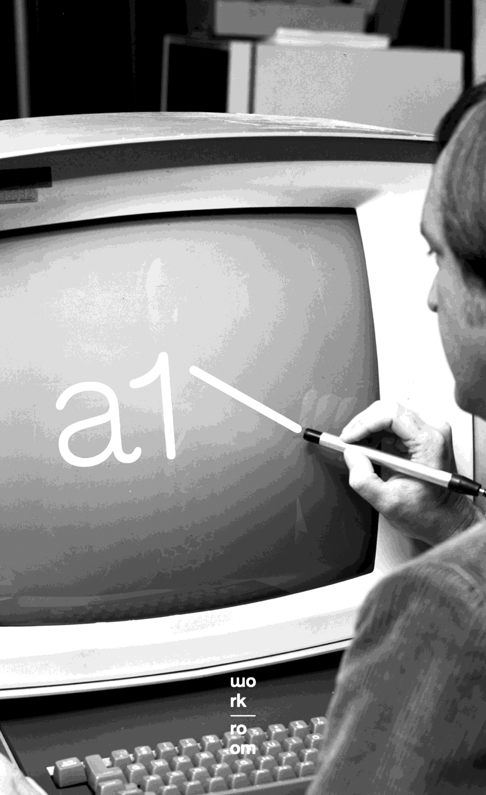
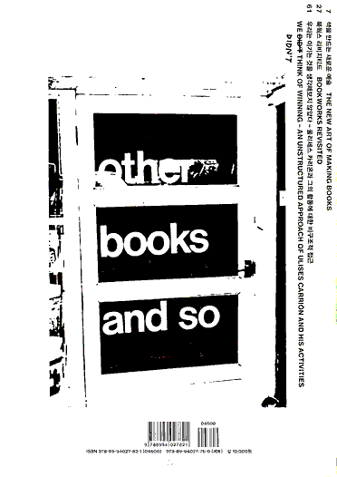

2 — 수행적 리서치
일주일 동안 이런 편집적인 행위 사진을 찍거나 영상으로 기록한다. 모은 여러 행위들을 목록화한 후, 데이터로 축적한다. 이후 책에서 발췌한 텍스트와 연결한다.
과정 구체화
1. 관찰: 일상 속에서 드러나는 편집적 행위를 포착한다. (사진, 영상, 메모 등 기록)
2. 수집: 일주일 동안 모아낸 행위들을 데이터처럼 축적한다.
3. 목록화: 수집된 행위를 분류하고 목록으로 정리한다.
4. 연결: 목록화된 행위를 우리가 읽은 책에서 발췌한 텍스트와 매칭한다.
5. 재구성: 이 과정을 통해 편집과 변이가 어떻게 시각적·개념적으로 드러나는지 작업으로 확장한다.
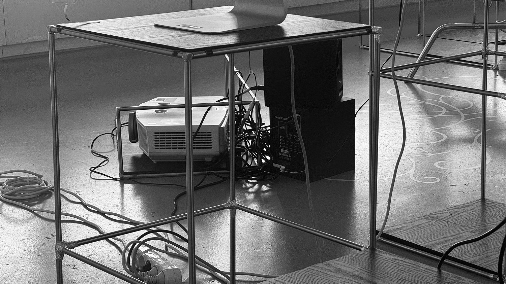
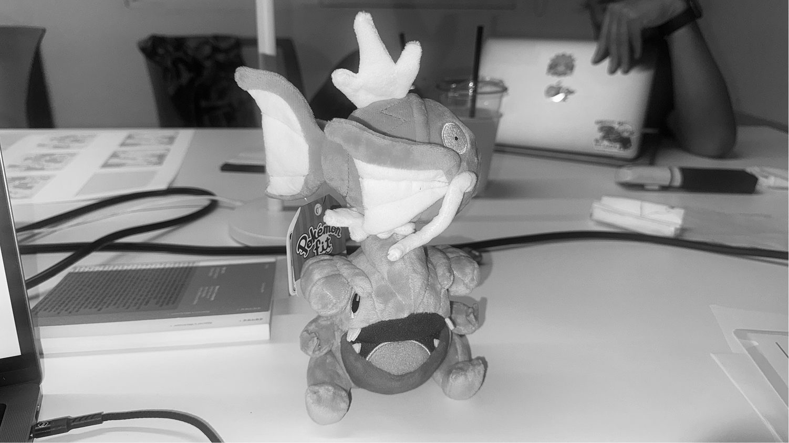
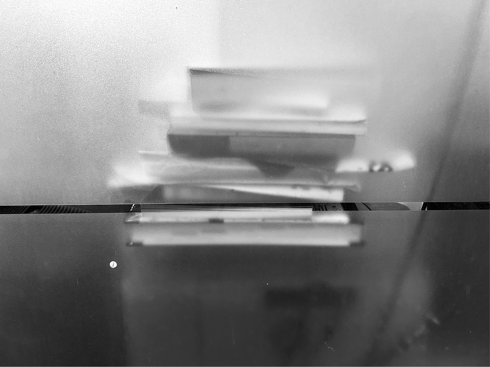
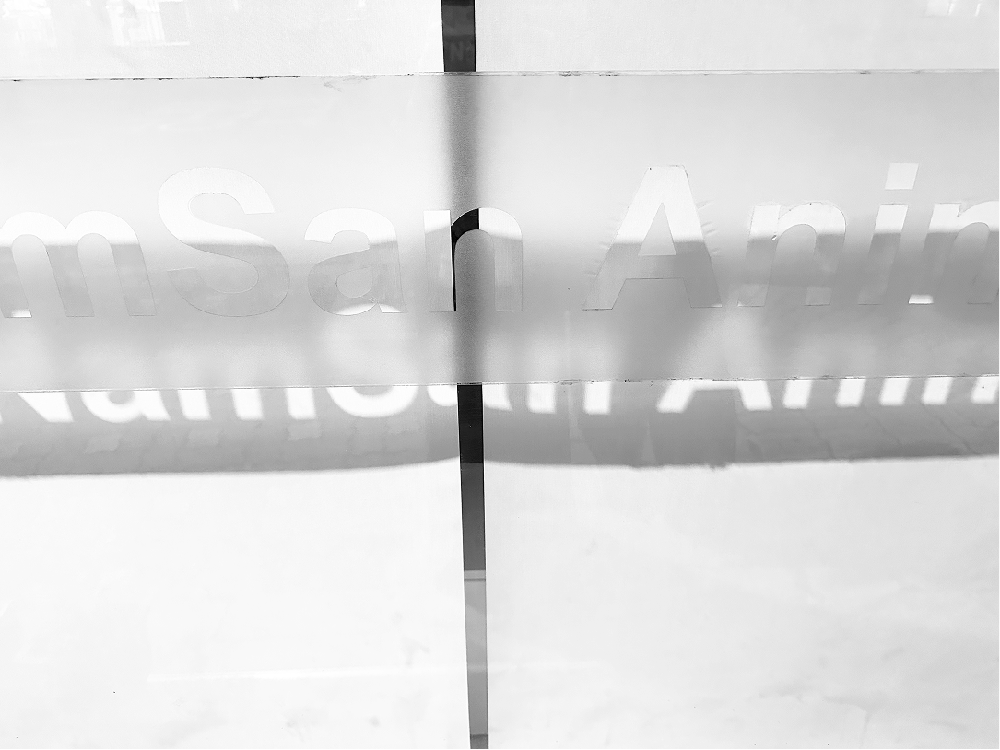
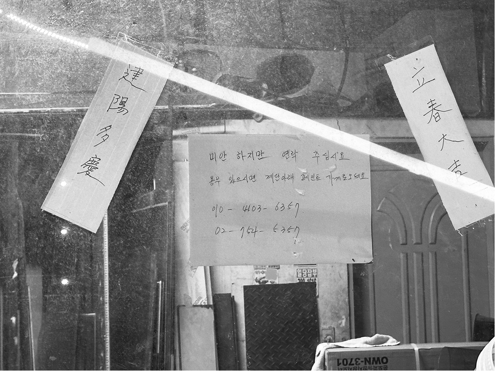
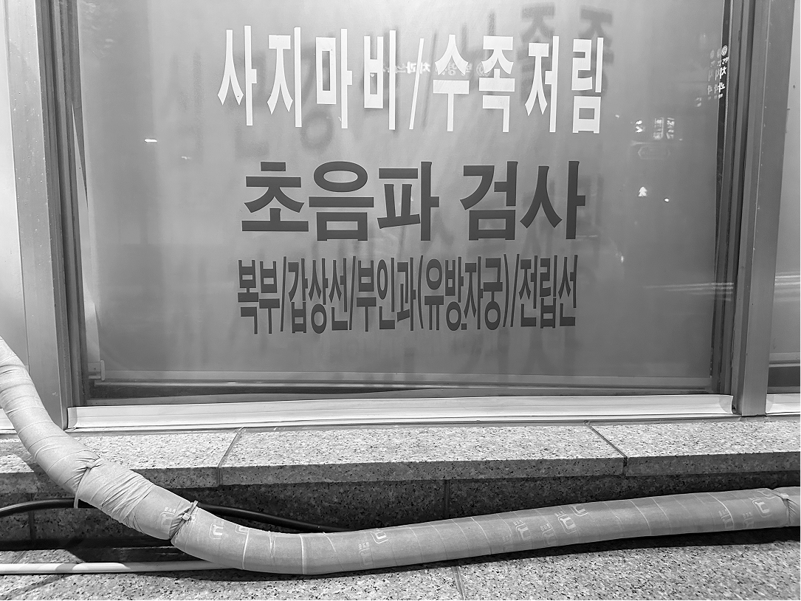
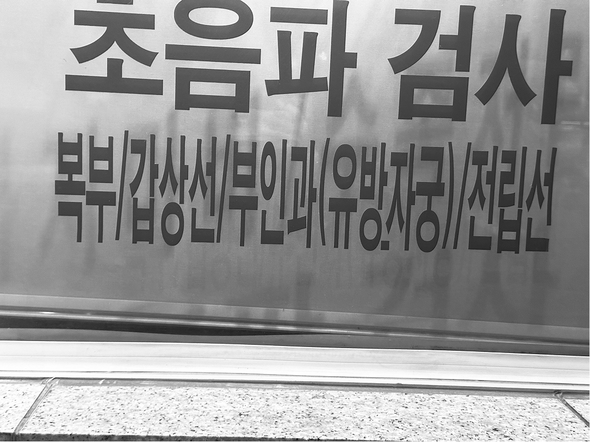
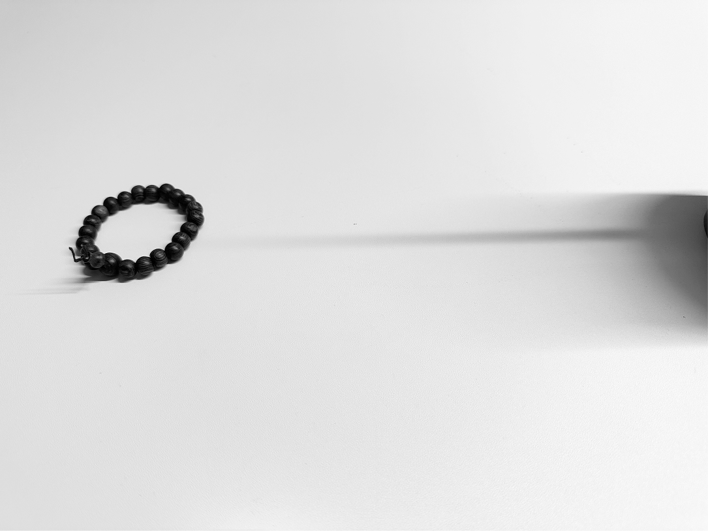
3 — 용어 리서치
큐레이션
다른 사람이 만든 콘텐츠를 목적에 따라 선별·분류·배포하는 일. 방대한 정보 속에서 ‘선별된 양질의 정보’에 대한 수요가 커지며,
창작(제작) 중심이던 가치가 분류·편집·유통으로도 확대된다. 주제별 정보를 모아 제공하는 앱, 집단지성 기반의 위키, 자료를
자기 스타일로 조합하는 파워블로거 등도 큐레이션의 한 형식으로 볼 수 있다.
유전자 편집
유전체(게놈)에서 특정 DNA 구간을 핵산 분해 효소로 절단한 뒤 수리 과정에서 의도한 염기서열을 빼거나 더하거나
치환하는 유전공학적 조작. 미리 설계된 효소가 표적 구간을 인식·절단하고, 세포의 복구 메커니즘을 이용해 원하는 변이를
도입한다.
교정
치과교정과의 술식. 비뚤어진 치열·돌출입·부정교합 등을 고정식/가철식 장치로 고르게 하는 시술로,
기능적(저작·발음·위생) 개선과 심미적 개선을 함께 목표로 한다.
콜라주
서로 다른 질감의 재료(천, 비닐, 타일, 종이, 상표 등)를 붙여 화면을 구성하는 시각예술 기법.
어원은 프랑스어 coller(붙이다)에서 왔다.
자기검열
표현으로 인한 불이익을 고려해 스스로 표현을 제한·삭제하는 행위. 직접 강요가 없더라도 사회적 억압이나
권력의 압박에 따른 잠재적 불이익을 감당하기 어려울 때 발생한다.
시퀀스
전기·제어 분야에서 장치의 동작 순서/조건을 미리 정해 운전·안전을 관리하는 체계.
변전소·자동화 설비 등에서 시퀀스 도면으로 절차를 명시해 사고 대응과 효율적 운전을 가능하게 한다.
알고리즘
문제 해결을 위한 유한한 명령 집합(절차). 모든 입력에 대해 정지하는 계산 과정을 지칭하며,
컴퓨터 프로그램은 정교한 알고리즘들의 조합으로 볼 수 있다.
편집
일정한 방침 아래 다양한 재료(텍스트, 이미지, 영상, 소리 등)를 모아 하나의 매체/작품으로 구성하는 행위.
영화 매체에서의 편집
촬영된 쇼트를 선택·배열하여 서사와 리듬을 조직하는 후반 과정. 연극이 무대 위 하나의 연속적 시간에 머무는 반면,
영화는 쇼트의 단절과 결합을 통해 새로운 지각 경험을 만든다. 특히 몽타주는 동일한 소스도 결합 방식에 따라
전혀 다른 미학적 효과를 낳는다는 점에서 편집의 핵심적 미학을 보여준다.
매체론적 관점
벤야민은 편집 기능을 ‘영화의 변증법적 구조’로 보았고, 브레히트의 ‘소격 효과’가 영화에서는 기술적 조건(몽타주 등)
으로 구현된다고 보았다. 즉, 편집은 논리적 시공간을 해체·재구성함으로써 관객에게 다른 시공간의 체험과 비판적 거리를
제공한다.
4 — 희원 책 리서치
문예 비창작: 디지털 환경에서 언어 다루기
주요 개념: 움직이는 정보(moving information), 비창조적 글쓰기(Uncreative Writing), 언어의 물질성, 텍스트 생태계, 문자성(textuality), 누드 미디어(Nude Media)
오늘날 기술은 글쓰기의 기계론적 경향을 가중한다. 작가들은 웹의 구조적 작동 원리를 문학 창작의 방법으로 삼으며, 워드프로세싱, 데이터베이싱, 전유, 표절, 암호화, 집중 프로그래밍 등 기존 문학적 실천의 경계를 넘는 글쓰기 방식을 탐구한다.
조너선 리섬은 『하퍼스』에 게재한 <영향에 대한 황홀감: 표절>에서 표절을 옹호하며, 인류의 문학이 본래 타인의 언어를 반복하고 도용하고 전유해온 역사임을 밝힌다. 젊은 작가들에게 글쓰기란 언어를 한 곳에서 다른 곳으로 옮기는 행위이며, 맥락이 곧 내용이다.
웹이 부상하며 문예는 자신의 사진을 만났다. 우리가 스크린에서 보는 모든 그래픽, 소리, 영상은 언어의 외피 위에 있으며, 그 아래에는 끝없이 이어지는 텍스트의 세계가 존재한다. 코드 역시 문학적 가치를 지니며, 언어는 이제 물질적이고 가소적이다.
디지털 언어는 유동적이며 다중언어적이다. 언어는 더 이상 단순한 의미 전달의 도구가 아니라, 이미지·정동·정치의 물질로 작동한다. 디지털 시대의 언어는 스스로 생태계를 이루며, 지속적이고 변형 가능한 텍스트의 리좀형 순환을 형성한다.
스크린은 내부와 외부의 경계를 흐릿하게 만든다. 인간의 피부와 유사한 감각적 매개로서, 관객과 이미지 사이의 신체적 접촉을 매개한다. 줄리아나 브루노는 “우리와 객체, 혹은 환경 사이의 상호 접촉은 표면에서 발생한다”고 말한다. 시각적 경험은 촉각적 교환의 장이 된다.
웹과 하이퍼텍스트는 비선형적 연결망으로 작동한다. 텍스트는 무한히 연결되고 확장되며, 의미는 고정되지 않는다. 디지털 글쓰기는 인쇄 매체의 선형성을 벗어나 열린 서사의 구조를 창조한다.
4 — 성건 책 리서치
책을 만드는 새로운 예술
핵심 구절: “오래된 예술에서 작가는 텍스트를 쓴다. 새로운 예술에서 저자는 책을 만든다.”
책은 공간들의 순차이며, 각기 다른 순간에 인식되는 시공간적 구조다. 책은 단순히 단어의 그릇이 아니며, 자율적인 현실로 존재한다. 저자는 이제 텍스트뿐 아니라 그것을 담는 ‘형식’과 ‘매체’를 포함한 전체 구조를 다루는 존재다.
새로운 예술에서 언어는 의도나 효용을 전달하지 않는다. 언어는 시공간적 형식을 탐색하며 자기 자신을 탐구하는 재료다. 저자는 단어의 선택을 넘어, 책의 구조와 그 기능을 설계함으로써 의미를 창조한다.
모든 페이지는 다르며, 각각의 페이지는 책 구조의 개별 요소로서 고유한 역할을 가진다. 독자는 더 이상 처음부터 끝까지 읽는 존재가 아니라, 구조를 인식하는 존재다. 책은 독자에게 새로운 읽기 조건을 제시한다.
출판(Publishing)은 더 이상 대량 복제나 상업 유통의 행위가 아니다. 디지털 시대의 출판은 ‘공개(Making Public)’ 행위 자체로 재정의된다. 중요한 것은 결과물로서의 책이 아니라, 정보가 어떤 형식과 매체를 통해 공유되고 경험되는가이다.
출판의 새로운 정의
출판은 텍스트·이미지·사운드 등의 콘텐츠(Content)를 특정한 형식(Form)에 담아, 불특정 다수(Public)에게 공개하고 공유(Reproduction/Distribution)하는 모든 행위를 포함한다.
4 — 예진 책 리서치
책은 공간들의 순차이며, 서로 다른 순간의 인식을 통해 완성된다. 이는 단순한 텍스트의 집합이 아니라, 물리적 구조와 시간의 흐름 속에서 체험되는 시공간적 예술이다.
오래된 예술에서 저자는 텍스트를 썼지만, 새로운 예술에서 저자는 책을 만든다. 텍스트는 책의 일부일 뿐이며, 책은 그 자체로 자율적인 현실을 구성한다. 책의 언어는 더 이상 의미를 전달하는 도구가 아니라, 공간을 형성하는 구조적 기호다.
새로운 예술의 책에서 단어들은 특정한 의도를 전달하지 않는다. 그것들은 구조적 전체의 일부로 기능하며, 독자는 책의 전체 구조를 인식하는 순간 읽기를 멈출 수도 있다. 이처럼 책은 ‘읽는 행위’를 재정의한다.
출판의 의미 또한 변화했다. 더 이상 대량 복제나 상업 유통의 과정이 아니라, 공개화(Making Public) 자체의 행위로서 이해된다. 즉, 정보를 일정한 형식으로 불특정 다수에게 드러내는 모든 과정이 출판이다. 이는 디지털 매체와 독립출판 문화의 확산 속에서 더욱 확장된 개념이다.
5 — 편집과 변이 스테이트먼트
우리 팀은 출판이라는 키워드로 엮인 것 같았지만 ‘편집과 변이’라는 키워드에 도달했다. 출판의 역사를 돌아보면, 그것은 단순히 텍스트를 전달하는 방식이 아니라 항상 저항과 선택의 결과로 이어져 왔다. 그리고 우리가 관심있는 것들도 진 문화와 독립출판, 지면과 화면으로의 이동과 같이 기존의 형식을 변형시키거나 해체하고 다시 조합하는 것들이라고 생각했다.
우리는 이 지점을 흥미롭게 보았다. 편집은 단순히 문장을 다듬는 행위가 아니라, 세계를 바라보고 구성하는 방식이다. 책에서 한 문장을 발췌하는 것도, 책장에서 어떤 책을 먼저 꺼내는 것도, 타투를 가리기 위해 팔토시를 끼는 것도 모두 편집적 선택이다. 나아가 이런 편집은 언제나 특정한 맥락 속에서 정치적 의미를 가질 수 있다. 그렇기 때문에 편집은 곧 변이의 시작점이 되며, 편집과 변이가 서로 맞물려 우리의 현실을 구성한다고 보았다.
6 — 희원 영상-책 사례 리서치
아래 사례 이미지는 영상과 책의 상호 전환, 그리고 편집과 변이의 관점을 시각적으로 보여준다.
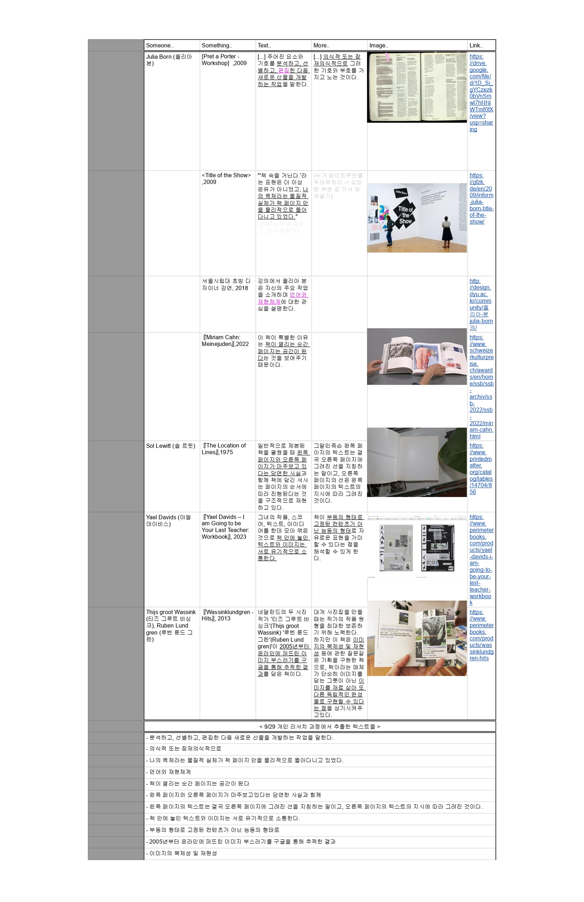
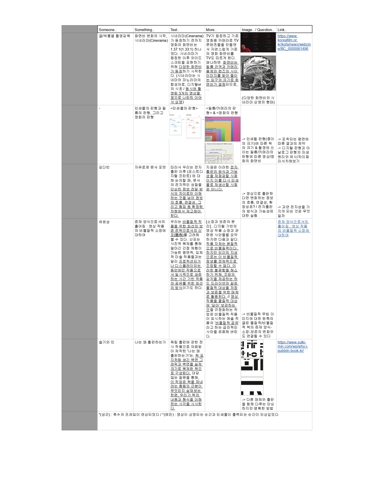
6 — 성건 영상-책 사례 리서치
울리세스 카리온 (Ulises Carrión) — 「책의 새로운 예술(The New Art of Making Books)」
“책은 아이디어를 담는 용기가 아니라, 그 자체로 의미의 시퀀스다”라고 선언하며 책의 구조 자체를 실험했다.
Robbing the Post Office (Mail Art)
우체국 시스템을 통해 생성된 편지, 엽서, 도장 등의 인쇄물을 ‘편집’하여 책으로 엮은 작업. 사적 매체인 ‘우편물’을 ‘책’이라는 형식으로 가져오며, 시간순 배열과 페이지 단위의 묶음을 통해 개인적 기록을 공적 예술로 변이시켰다. 각 우편물의 맥락(도착 시간, 보낸 사람)은 책의 페이지 순서와 레이아웃이라는 새로운 문법 안에서 재해석된다.
이르마 붐 (Irma Boom)
책의 물성과 구조를 통해 콘텐츠를 재해석하는 북 디자이너. 책을 정보 매체를 넘어 하나의 예술 오브제로 제시한다.
마셜 매클루언 (Marshall McLuhan)
“미디어는 메시지다”라는 명제로 매체의 형태가 내용에 미치는 영향에 주목. 수용자 참여도와 정보 선명도에 따라 핫/쿨 미디어로 구분했다.
핫 미디어: 고선명, 낮은 참여도 — 라디오, 영화, 사진, 인쇄물 등
쿨 미디어: 저선명, 높은 참여도 — 텔레비전, 전화, 만화, 대화 등
그의 저서 『미디어의 이해: 인간의 확장』에서 매체와 감각의 확장을 대응시켰다.
바퀴→다리 / 책·문자→눈 / 옷→피부 / 라디오→귀 / 전화→목소리 / 컴퓨터·전자회로→중추신경계
감각과 매체 적용 스케치
눈: 글, 이미지, 책, 영상, 퍼포먼스
귀: 영상, 대담, 음악, 퍼포먼스
입: 대담, 음악, 퍼포먼스
몸짓: 퍼포먼스, 제스처(바디 랭귀지)
코: (추가 예정)
제라르 주네트 (Gérard Genette) — 파라텍스트(Paratext)
본문 밖의 요소(표지, 제목, 서문, 추천사 등)가 독해에 미치는 영향 분석.
페리텍스트: 판형, 표지, 제목, 속표지, 페이지, 날개 등 본문과 물리적으로 연결된 요소
에피텍스트: 서문, 추천사, 후기, 역자 후기 등 외부적이지만 의미를 보완하는 요소
니콜라 부리오 (Nicolas Bourriaud) — 포스트 프로덕션
DJ/프로그래머처럼 기존 산물을 샘플링·재편집·재구성해 새로운 맥락과 의미를 만드는 동시대 예술의 전략을 설명.
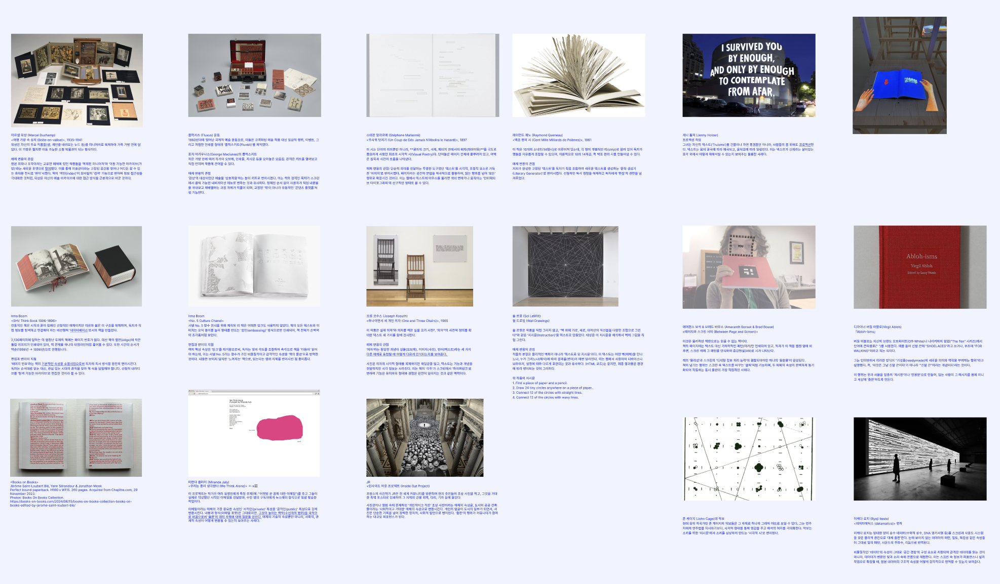
6 — 예진 영상-책 사례 리서치
영상적 시간성과 책의 순차 구조를 오가며, 편집과 변이를 통해 읽기 조건을 재설정한 사례들.
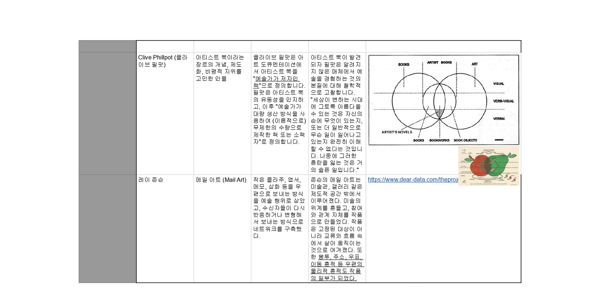
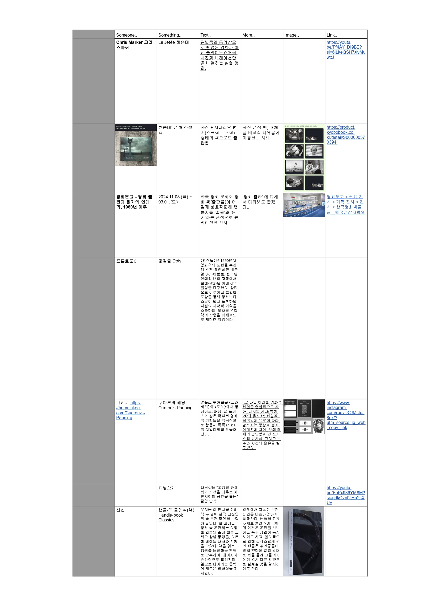
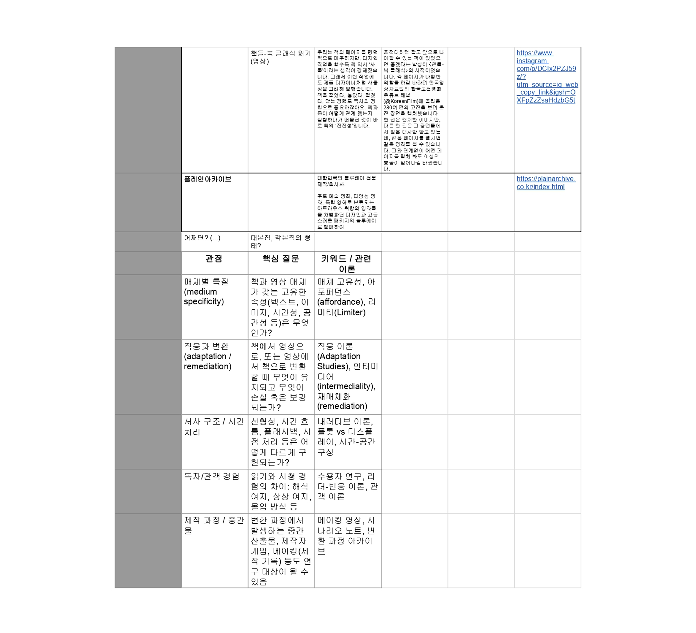